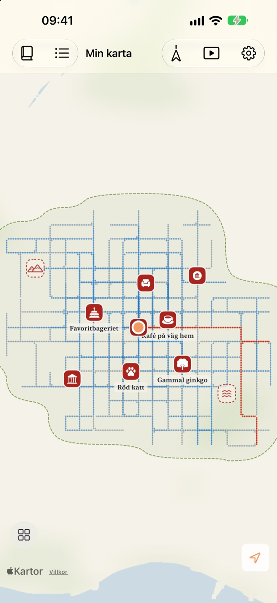
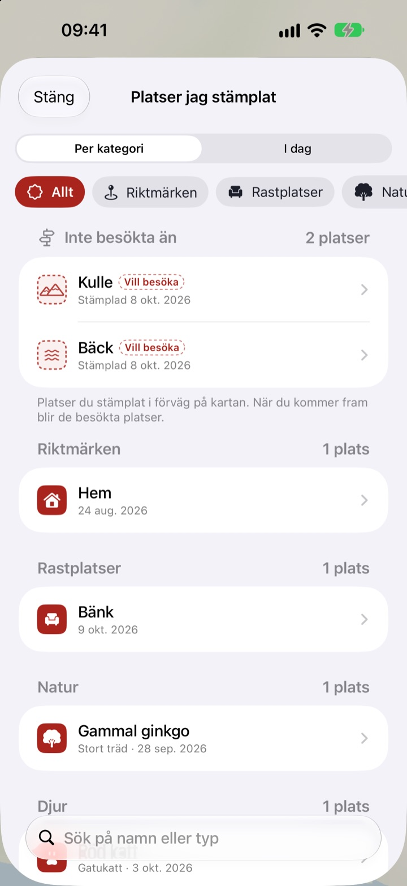
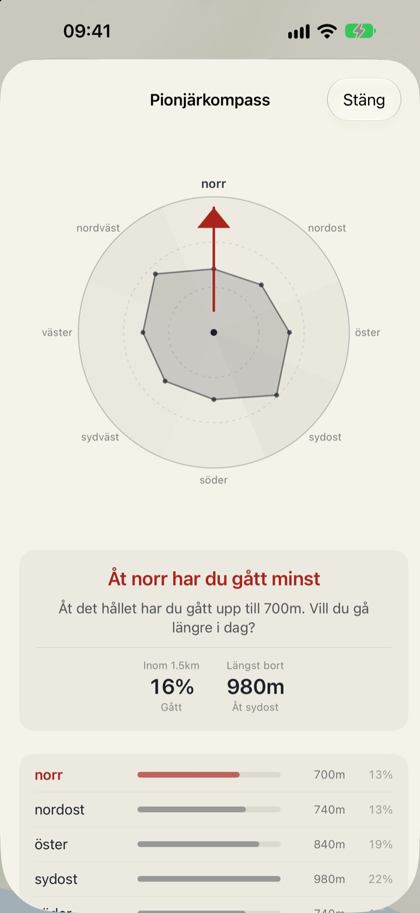
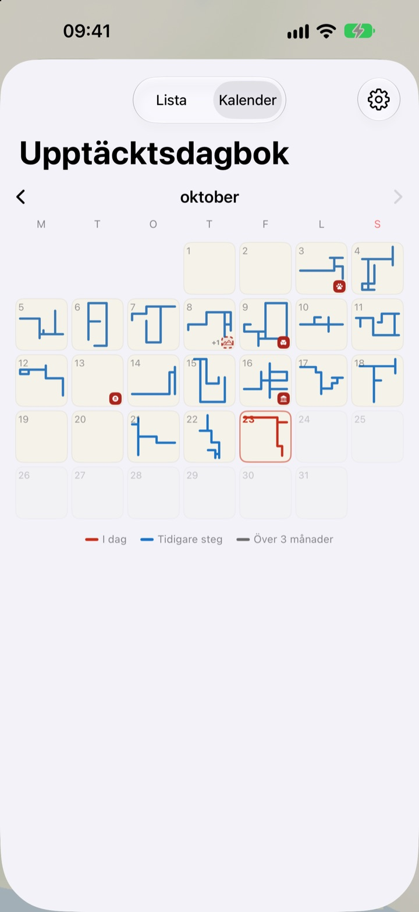

En karta som bara
fylls i till fots
Den börjar som ett tomt papper. Bara platserna du går på fylls i, punkt för punkt, och går du samma gata hundra gånger blir den inte bredare. Vill du att kartan ska växa får du ta en ny väg.
Alla funktioner är gratis och utan reklam.

Ta en promenad
Dra med fingret eller musen över papperet för att gå. De blå prickarna är gator du gått förut. Se hur Dagens väg ändras när du går i gamla spår och när du tar dig någon ny väg.
Går du samma gator varje dag?
En stegräknare räknar steg men frågar aldrig vart de tog vägen. Hem till stationen och tillbaka räcker gott för att fylla ringen, så sidogatan intill förblir ett mysterium i åratal. Buktu Buktu räknar bara vägar du går för första gången, och det ger dig en anledning att ta en omväg på ett kvarter i dag.
Stämpla platser du varit på och vill till
Stämpla där du står, eller håll ned var som helst på kartan. Det finns 212 stämplar att välja mellan, ordnade efter kategori.
En stämpel på en plats där du aldrig gått blir kvar som en plats att besöka och blir en besökt plats när du väl kommer dit. Fotografera en butiksskylt så klipps bakgrunden bort och skylten reser sig som ett klistermärke på just den platsen.

Nästa promenad: åt det håll du gått minst
Pionjärkompass delar in omgivningen i åtta riktningar och pekar ut den du täckt minst.
Dagens fotspår radar upp platserna där du stannade i dag i ordning, med hur långt du gick mellan dem.

Varje dag lämnar en form
Kalendern ritar formen på varje dags promenad i stället för en siffra. För dagbok med text och foton och se hur stor del av varje promenad som var ny mark.
Välj en period och se din karta ritas fram som en video du kan exportera.

Tre steg för att komma igång
- 1
Öppna appen
Ett tomt papper vecklas ut.
- 2
Tillåt platsåtkomst
Välj Alltid och slå på Rörelse och träning så loggas promenaderna utan att du öppnar appen.
- 3
Gå ut
Ju mindre bekant gatan är, desto mer växer kartan.
Så läser du kartan
- Röda prickar
- där du gick i dag
- Indigoblå prickar
- tidigare steg, mörkare där du går oftast
- Grå prickar
- platser du inte återvänt till på över tre månader. De bleknar men försvinner aldrig
- Streckad stämpel
- en plats att besöka. Den blir besökt när du kommer dit
- Vägar jag ritat
- den sammanlagda längden av alla vägar du gått för första gången
- Dagens väg
- hur stor del av dagens promenad som var ny
- Visa allt samlat
- i Inställningar, öppnar Pionjärkompass, Dagens fotspår och filmen där kartan ritas
Välj mellan tuschkartan och Ritad karta.
Alla funktioner är gratis
Gratis
- En karta som bara fylls i där du går, med koll på nya vägar
- 212 stämplar och klistermärken av butiksskyltar
- Pionjärkompass och Dagens fotspår
- Kalender och dagbok med text och foton
- Exportera videon där din karta ritas
- Widgetar för hemskärmen och låsskärmen
- Synkning mellan enheter via iCloud
Stöd utvecklaren
- Skicka en liten dricks från Inställningar om du vill
- Dricks låser inte upp något. Appen är densamma oavsett
Ingen reklam, ingen prenumeration.
Frågor
Jag gick en promenad men inget syns på kartan.
Gå till Inställningar > Buktu Buktu > Plats, välj Alltid och slå på Rörelse och träning. Då loggas promenader även när appen är stängd. Om du valt det batterisparande loggningsläget i appens inställningar öppnar du appen innan du går ut. Platser med låg noggrannhet sparas men ritas inte.
Loggas resor med bil eller tunnelbana?
Nej. Appen använder rörelsedata och hastighet för att bara rita gång och löpning, och utelämnar sträckor som ser ut att vara med fordon. Ibland kan den ta fel.
Jag går samma väg varje dag och kartan växer inte.
Så är regeln. Allt inom 30 m från där du redan gått räknas som samma väg, så bara vägar du går för första gången läggs till i Vägar jag ritat. Trottoaren på andra sidan gatan räknas också som samma väg. Pionjärkompass visar var du gått minst.
Skickas min plats någonstans?
Inte till utvecklaren. Dina steg, stämplar, dagbok och foton stannar på enheten och i din egen privata iCloud, och utvecklaren kan inte se dem. Anonym användningsstatistik innehåller aldrig koordinater, dagbokstext, platsnamn eller foton. Apple Kartor används för att göra om koordinater till platsnamn. Läs mer i integritetspolicyn nedan.
Följer mina loggar med till en ny enhet?
Ja. Logga in med samma Apple-konto på den nya enheten och ha iCloud påslaget, så följer steg, stämplar, dagbok och foton med.
Hur tar jag bort en stämpel eller ett foto?
Ta bort stämplar i listan Platser jag stämplat, och håll fingret på ett foto i dagboken för att ta bort det. Ett sätt att radera alla vägar och dagboksanteckningar på en gång finns med i planerna.
Hur lägger jag till widgeten?
Håll fingret på hemskärmen, tryck på Redigera > Lägg till widget och välj Buktu Buktu. På låsskärmen håller du fingret på den och trycker på Anpassa. Widgeten på hemskärmen visar formen och längden på dagens väg, och låsskärmen visar dagens sträcka.
Vad behöver jag?
En iPhone med iOS 17.0 eller senare.
Hur kontaktar jag er?
Skicka feedback från appens inställningar eller mejla oss på adressen nedan. Vi svarar så snart vi kan.
Frågor eller synpunkter? Skriv till leeo@kakao.com.